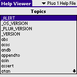
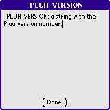
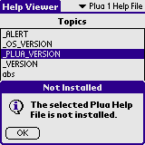

Plua Help Viewer is a small utility to read the topics in the Plua Help files (PluaHelp.prc and plua2help.prc) from the Plua 1 or Plua 2 distributions.
Installation of Plua Help Viewer is no more different than installation of any other Palm OS program:
When the synchronization is done you will have a 'HelpViewer' icon in the Unfiled category on your Palm PDA. Feel free to move Kasino to another category.
Before getting any benifit from the Plua Help Viewer you must install the Plua 1 help file, the Plua 2 help file or both. The launch Help Viewer.
 In the upper right corner you can select between the two help files. Select a topic from the list and it will show the full text for that topic.
 Click Done to dismiss the page.
 If you try to switch to a help file which is not installed you will be shown an error.